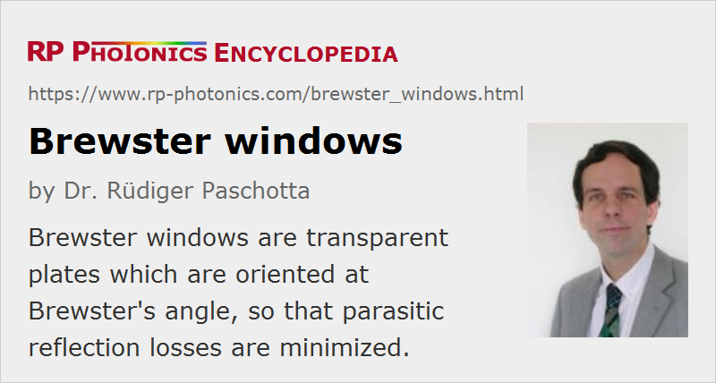

Brewster Windows
Definition: transparent plates which are oriented at Brewster's angle such that parasitic reflection losses are minimized.
More general terms: optical windows
German: Brewster-Fenster
How to cite the article; suggest additional literature
Author: Dr. Rüdiger Paschotta
There are situations where an optical beam must be sent through some transparent optical window, whereas the optical losses occurring at this window must be very small. A typical example is a helium–neon laser with a sealed glass tube and external resonator mirrors as shown in Figure 1, where glass windows separate the laser gas mixture from ambient air. Given the small gain and the small output coupler transmission, the losses at these interfaces need to be far below 1% per pass. This is achieved by using Brewster windows, where the angle of incidence is close to Brewster's angle. In that situation, the reflectivity at the air–glass interfaces becomes very small for p-polarized light, i.e., when the polarization direction (= direction of the electric field) is in the plane of incidence.
An uncoated glass plate at normal incidence would normally have a reflectivity of several percent on each side. With an anti-reflection coating, this could be reduced to e.g. 0.2%. Brewster windows can have at least 10 times lower losses. In addition, any residual reflection will leave the resonator, rather than lead to interference effects (as can occur for windows with normal incidence). Of course, both Brewster windows in a setup as shown above must have exactly the same orientation.
Due to the significant loss difference between p and s polarization, the polarization of laser emission is usually forced to be in the p direction if a Brewster window or Brewster plate is within the laser resonator. In many lasers, this is the only effect determining the polarization direction.
A potential disadvantage of Brewster windows (or other polarizing optical elements) in a laser resonator is that large depolarization loss can arise if, e.g., thermal effects within a laser crystal affect the polarization. In that case, reflected beams with significant optical power and typically poor beam quality leave the Brewster windows.
Brewster windows are also often used for optical modulators and for laser housings.
Suppliers
The RP Photonics Buyer's Guide contains 22 suppliers for Brewster windows. Among them:
Questions and Comments from Users
Here you can submit questions and comments. As far as they get accepted by the author, they will appear above this paragraph together with the author’s answer. The author will decide on acceptance based on certain criteria. Essentially, the issue must be of sufficiently broad interest.
Please do not enter personal data here; we would otherwise delete it soon. (See also our privacy declaration.) If you wish to receive personal feedback or consultancy from the author, please contact him e.g. via e-mail.
By submitting the information, you give your consent to the potential publication of your inputs on our website according to our rules. (If you later retract your consent, we will delete those inputs.) As your inputs are first reviewed by the author, they may be published with some delay.
See also: Brewster's angle, Brewster plates, optical windows, anti-reflection coatings, gas lasers, depolarization loss
and other articles in the category general optics
|  |
If you like this page, please share the link with your friends and colleagues, e.g. via social media:
These sharing buttons are implemented in a privacy-friendly way!